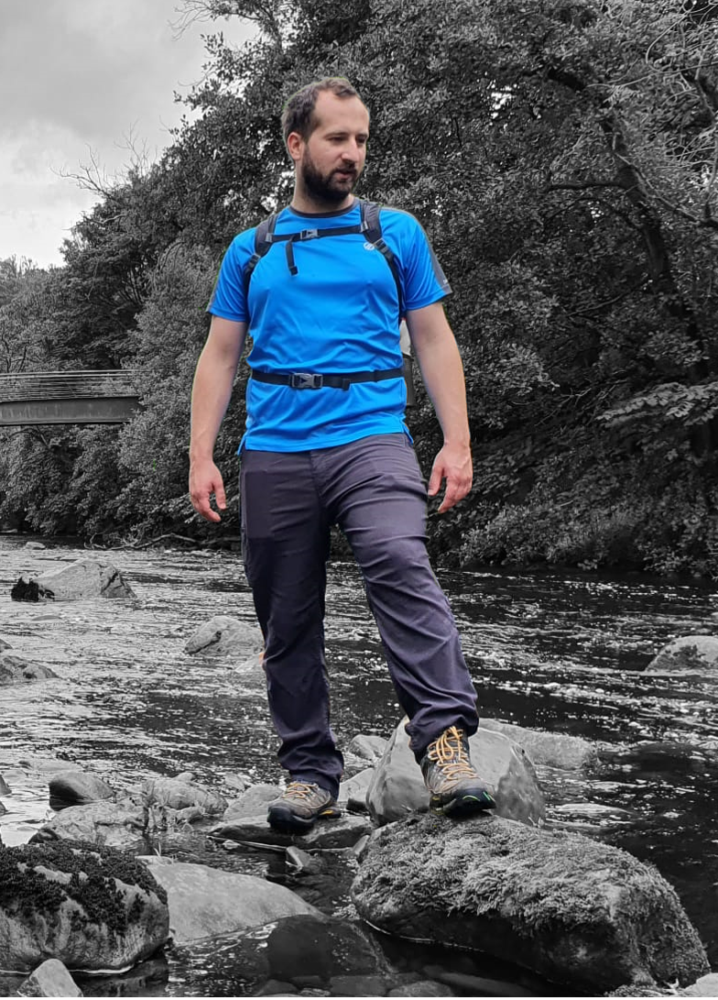
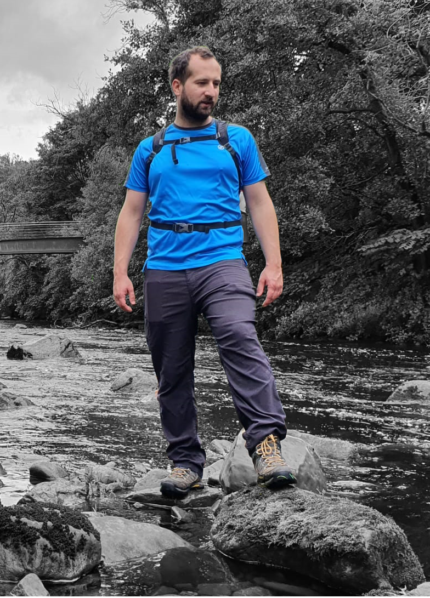

I am Website Developer based in Manchester UK.
At the moment I am coding HTML, CSS, JS.
My biggest passion is cycling. I am riding on MTB as well as on the road bike. I also
feel good when I am hiking,
Another passion is cooking. In the kitchen I like improvisation. I am not following the recepies. I am
creating my own. And only 2 times I've been not able to eat my food ;)
And of course coding is another thing what I really like. The opportunities in technology are endless. I
haven't got large portfolio yet, but I hope it's gona be change soon. I've got lots of ideas and I am
still
learnig and growing exeprience.
There is not a lot here at the moment. But couple of projects are in
progress.
Trustworthy person who enjoys challenges and learning new skills. Self-motivated with great attention to
detail. Able to work individually and as a part of the team. Years of experience in time pressured
environment led to develop good prioritizing skills.
Basic programming knowledge including HTML, CSS, Python 3, JavaScript.
Microsoft Office including Word, Excel, Power Point and Outlook.
Perfect time management with ability to multi- task effectively and prioritize workload.
Bilingual: Polish & English.
AMNESTY FLOOR MONITOR, PICKER, PICK INSTRUCTOR
AMAZON UK May 2020 – Present
Started as a Picker, promoted to pick instructor. After 10 months joined Amnesty Floor Monitor
department.
Amnesty Floor Monitor:
• Attended and recovered faulted drive units on the Amazon Robotic Floor.
• Removed basic issues on the Amazon Robotic Semi-Automated Workstations (ARSAW).
• Monitored conveyer belts and removed blockages.
• Kept a close contact with Reliability and Maintenance Engineering Team (RME) to ensure steady
workflow at the stations.
• Prioritized tasks to ensure high productivity on other departments.
Pick instructor:
• Ensured steady workflow at the process by sharing knowledge with associates.
• Created positive and friendly work environment for all associates.
• Supported new and existing associates with their day-to-day problems.
• Helped Managers and Team Leaders to communicate their expectations with the associates.
Picker:
• Maintaining good housekeeping of the work area.
• Ensuring excellent quality and productive picking.
• Achieving best results in safety audits.
BAR MANAGER
LAS IGUANAS, UK July 2018 – October 2020
• Completed daily checks, ensured paperwork was available during audits.
• Completed regular bar inventories and daily requisition sheets.
• Followed First In First Out rules.
• Delivered exceptional service by greeting and serving customers in a timely and friendly
manner.
• Helped with the bar training for new staff.
DEPUTY MANAGER
PIANKA, POLAND December 2017 – June 2018
• Created weekly and monthly forecasts.
• Resolved customer issues and complaints.
• Provided detailed monthly departmental reports and updates to senior management.
Higher Engineering School of Work Safety and Organization
Bachelor of Engineering - Environmental engineering with specialization sanitary
installation
Radom, Poland 2016
High School
Pionki, Poland 2010
A-Levels:
English, Mathematics, Physics, Polish
CERTIFICATIONS (available upon request)
HTML, CSS
www.itonlinelearning.com
JAVASCRIPT, PYTHON 3, Git&GitHub, COMMAND LINE
www.codecademy.com
KEEP DOOR CLOSED
AMAZON, UK (In progress)
Worked in cooperation with Health and Safety department to improve new workstations to avoid
injuries on
the Pick department. Introduced own idea to use magnetic tape to ensure the doors are secured
and closed,
minimizing the risk of Associates backing into open door or falling down the stair. Provided
detailed cost
break down.
AMNESTY TOOL
AMAZON UK 2022
Created a HTML/CSS file containing necessary hyperlinks and websites to help and facilitate
running shift in
absence of Amnesty Team Leader. File is easy to use and saves time on set up. It provides all
required
information needed to monitor Amazon Robotic Floor Health and workflow on the conveyor belts. It
includes shortcuts to generate data for End of Shift Report.
 
